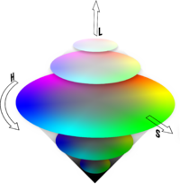

Color in Opera 10 — HSL, RGB and Alpha Transparency
Introduction
This article explains how the HSL (Hue, Saturation, Lightness) and RGB (Red, Green, Blue) color models work (and the alpha transparency options in both color models), as supported in the new Opera 10 browser. It also shows how designers and developers can tap into these color models to create more intelligent color schemes. We will first look at RGB, and how it can be considered somewhat counter-intuitive; then we will explore use of HSL colors for web color schemes, and how shifting the component values gives more logical results, once you get used to how they work.
RGB Color
While RGB (Red, Green, Blue) notation using percentages or integers has been around for many years, RGB itself is not only CRT-specific, but it's rather non-intuitive. For most designers and developers, anything other than black, white and perhaps a handful of other commonly used colors are easily memorized in their RGB percentage or integer forms.
In CSS RGB notation, the percentage and integer options have no correlation. The following sample shows a line of CSS where #example1 uses integer based notation. #example2 uses percentage based notation, and as you can see, there's no correlation between the two resulting colors (here conveniently applied on the respective code samples):
div#example1 {color: rgb(100, 50, 20);}
div#example2 {color: rgb(100%, 50%, 20%);}
What's more, it's extremely important to not mix integers and percentages. Unfortunately, this happens sometimes due to human error, and most browsers use error handling and attempt to "guess" what you meant. This means the resulting color will be arbitrary. The specification forbids an integer and a percentage in the same color value string — in a single string you can use only one or the other, although you can use both notations within a given style sheet. So, it would be fine to use both #example1 and #example2 in the same sheet because each value uses an integer or percentages, but never use both in the same declaration.
RGB Color Notation: Counter-Intuitive
While RGB color notation has proven very useful throughout the life of CSS, the visual color table below shows that it's not very intuitive. First, one has to find the proper RGB notation in either percentage or integer values, or both, and then modify to get hue variations by changing the value of blue. If you try to find a more saturated color, or choose colors that are within a palette range, you have to look those up too. Simply changing percentages can end up being far more confusing, as is shown in Table 1.
Note: You can hover over each of the individual table cells to get information on what their color values are.
| Percentages, RGB, solid blue | Integers, RGB, decreasing blue | Percentages, RGB, modifying R&G values |
|---|---|---|
| Percentages, RGB, solid red | Integers, RGB, decreasing red | Modifying R&G values |
HSL: Hue, Saturation, Lightness Samples
HSL color, which is supported as part of the CSS 3 color module and has been implemented in Opera since 9.5, works very differently. Instead of adding amounts of red, green and blue (known as additive synthesis) to get a specific color, the hue is chosen as a base point. Then, the percentage of saturation and lightness can be independently modified using percentages, providing a much more intutive way for designers to work.
The HSL model attempts to recreate perceptual color. Using a 3d model, it's easier to see the geometric relationships that impact how color is perceived. At the center of the image, you can see the color wheel from which the hue is taken. Move toward lightness, and a lighter hue appears, move toward saturation, and greater saturation of the color becomes apparent (Figure 1).
Figure 1: Color cone* visually defining the Hue, Saturation and Lightness (HSL) from 0-360 degree angles and percentages.
In HSL color, when saturation is at 100% and lightness is at 50% you get a pure hue. So, 0, 100%, 50% is pure red. The hue value is expressed as an integer, but actually relates to the angle on the HSL color wheel where the Hue lies. So, common colors would be:
- hsl(0, 100%, 50%) - Red
- hsl(60, 100%, 50%) - Yellow
- hsl(120, 100%, 50%) - Green
- hsl(180, 100%, 50%) - Cyan
- hsl(240, 100%, 50%) - Blue
- hsl(300, 100%, 50%) - Magenta/Purple
And, because 360 degrees in HSL also falls on the 0 point, the value hsl(360, 100%, 50%) will also be red.
HSL Notation
Unlike RGB, HSL requires a mix of integer and percentage values. After the color property name, the hsl() notation is added. The first integer is the hue, and then a percentage value for saturation is followed by a percentage value for lightness. Any other notation will not work, as it is necessary to first set the hue so the browser can properly calculate your chosen percentages.
div#example3 {color: hsl(100, 50%, 20%);}
div#example2 {color: hsl(350, 40%, 90%);}
As a result, it becomes extremely easy to select a hue and then modify it by simply modifying its saturation and lightness values. This gives a range of options to the designer and developer that are very intuitive (Table 2).
| HSL: Blue analog to RGB blue | HSL: Saturation decrease | HSL: Light decrease | HSL: Change both |
|---|---|---|---|
| HSL: Red analog to RGB red | HSL: Saturation decrease | HSL: Light decrease | HSL: Change both |
With a bit of study, it should become clear to you that whether you're looking to increase or decrease lightness and saturation, or choose harmonious colors, using HSL is far more intuitive and easy to use.
Alpha transparency in CSS 3 colors
Along with the ability to interpret HSL or RGB notation, Opera 10 now offers both RGBA and HSLA — the core color models discussed in this article, but with an added alpha transparency value.
Using the alpha transparency value allows you to control how much opacity a given color has. Opacity ranges from 0.0 (fully transparent) to 1.0 (fully opaque).
The notation for RGB or HSL alpha transparency is to add the level of transparency in the fourth position of the color value. You must also prefix rgba or hsla to the value as follows:
div#example5 {color: rgb(100, 50, 20);}
div#example6 {color: rgba(100%, 50%, 20%, 0.9);}
div#example7 {color: hsla(100, 50%, 60%, 0.5);}
Table 3 shows one column of RGBA and one of HSLA opacity in use.
| Almost transparent | .25 transparency | .50 transparency | Opaque |
|---|---|---|---|
Conclusion
Intelligent use of the RGB and HSL color models will allow clever designers to overlap colors and even images, gaining powerful control over managing color and working with it to create a variety of imaginative designs. I hope this article has helped you to understand how these color models work, and inspired you towards better web design!
*Used with permission by Alexandre Van de Sande, wanderingabout.com
This article is licensed under a Creative Commons Attribution, Non Commercial - Share Alike 2.5 license.
Comments
The forum archive of this article is still available on My Opera.
No new comments accepted.